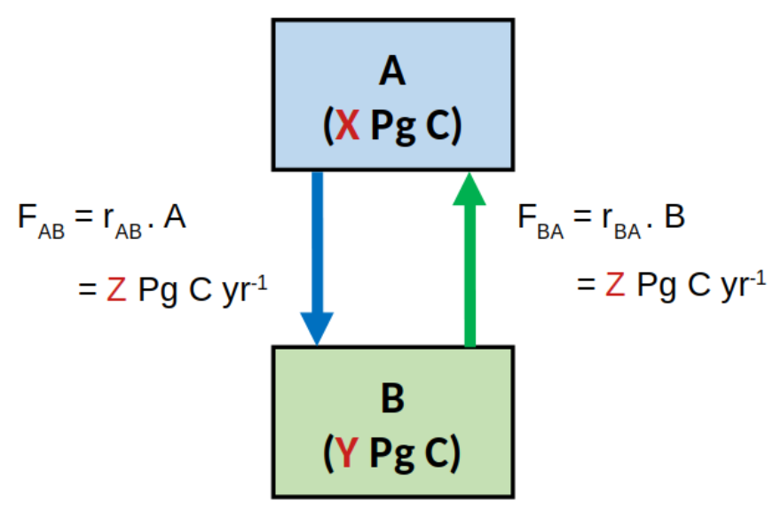

Tutorial
You are advised to watch the following video first.
There are no corresponding sections in the textbook.
Two-box model
Figure below shows a conceptual diagram of a system in a steady state, including the rate laws describing the fluxes of carbon (C) between the compartments A and B. The values of X, Y and Z are \(X=500\), \(Y=2500\), \(Z=50\).

The R chunk below sets the values of these variables/parameters.
X <- 500
Y <- 2500
Z <- 50X <- 500
Y <- 2500
Z <- 50Use R to estimate the rate constants \(r_{AB}\) and \(r_{BA}\) using the values of X, Y and Z given above.
# fill in the formulas
rAB <-
print(rAB)
rBA <-
print(rBA)Hint: The equations to use are depicted in the figure above.
Use R to estimate the residence time of carbon in the reservoir A (\(\tau_{A}\)) and B (\(\tau_{B}\)) using the values of X, Y and Z given above.
# fill in the formulas
tA <-
print(tA)
tB <-
print(tB)Hint: Residence time is the amount of material in the reservoir (\([Pg~C]\)) divided by the outflow (\([Pg~C~yr^{-1}]\)).
Implementation in R
Based on the reader that has introduced you to solving dynamic models in R, it should be rather easy to understand the following R-code that implements the two-box model above in R.
Modify the R-code to implement two types of perturbation of the system:
Deforestation, which is modeled by assuming that \(100~Pg~C\) was instantaneously moved from the reservoir B (biosphere) to the reservoir A (atmosphere).
Burning of fossil fuels, which is modeled by assuming that \(100~Pg~C\) was instantaneously added to the reservoir A (atmosphere) from an external reservoir (fossil fuels) that is not part of the model.
Note that after some time the system reaches a steady state. Think how this steady state depends on the type of perturbation.
require(deSolve)
# model function
model2box <- function(t, s, p){
with( as.list(c(s, p)), {
dA.dt <- -rAB*A + rBA*B
dB.dt <- rAB*A - rBA*B
return(list(c(dA.dt, dB.dt), SUM = A + B))
})
}
# model parameters
pars <- c(rAB = Z/X, rBA = Z/Y)
# initial state
state.ini1 <- c(A = X, B = Y) # steady state
state.ini2 <- c(A = X-10, B = Y+10) # perturbed
# time sequence
t.seq <- seq(from=0, to=100, by=1)
# calculate the solutions
out1 <- ode(y=state.ini1, time=t.seq, func=model2box, parms=pars)
out2 <- ode(y=state.ini2, time=t.seq, func=model2box, parms=pars)
# plot the solutions
plot(out1,out2, lwd=2, mfrow=c(1,3))Challenging questions
If you want a challenge, try to solve the following questions.
The system has been perturbed from the steady state by adding 100 Pg C from an external source to A. This perturbation did not affect the rate laws nor the rate constants. After some time, the system returned to a new steady state (equilibrium).
Quantify the response time of the system (\(\tau_{AB}\)), and the amounts of carbon in both reservoirs in this new steady state (\(A_{eq}\) and \(B_{eq}\)). Use R and the values of X, Y and Z defined earlier in this tutorial to calculate \(\tau_{AB}\), \(A_{eq}\) and \(B_{eq}\). Use the R-code from the earlier part of this tutorial to verify that your calculated values agree with those predicted by the numerical model.
tau.AB <- # enter formula
A.eq <- # enter formula
B.eq <- # enter formula
c(tau.AB=tau.AB, A.eq=A.eq, B.eq=B.eq)Hint: It is time to use the ‘pen & paper method’ and do a little bit of maths.
1. Write mass balance equations for \(A\) and \(B\), and substitute \[A=A_{eq} + \Delta A\cdot e^{-r\cdot t}\] for \(A\), and \[B = B_{eq} + \Delta B\cdot e^{-r\cdot t}\] for \(B\).
2. If you assume that \(t\) is a very large number (\(t\gg 1/r\)), you will be able to derive the following relationship: \[r_{AB}\cdot A_{eq} = r_{BA}\cdot B_{eq}\].
3. If you consider that \(A+B\) must remain constant at all times (conservation of carbon in the system), you will be able to derive the following relationship: \[\Delta A = -\Delta B\].
4. By simplifying the equation obtained in 1, and combining it with relationships obtained in steps 2 and 3, you will be able to derive a relationship for \(r\). The response time is then calculated as \[\tau_{AB}=1/r.\]
5. The conservation of carbon in the system (point 3) implies a relationship \[A_{eq}+B_{eq} = A_{ini}+B_{ini},\] where \(A_{ini}\) and \(B_{ini}\) are the initial values of \(A\) and \(B\), respectively, determined from \(X\), \(Y\) and the magnitude of the perturbation (now 100 Pg C).
6. By combining the relationships obtained in steps 2 and 5, you will be able to derive formulas for \(A_{eq}\) and \(B_{eq}\).